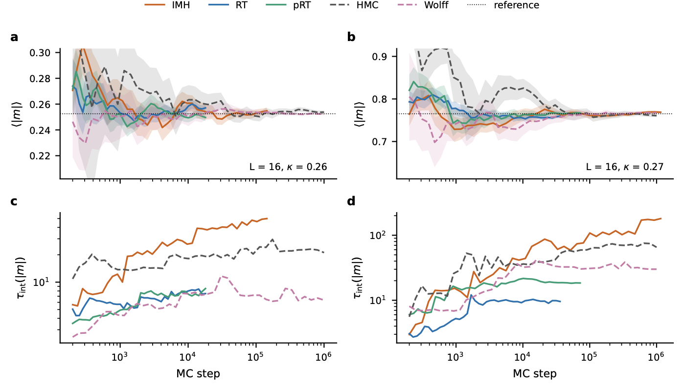

NHMC 预印本NHMC preprint · SPS 博客SPS blog
往返路径上的精确采样：学习型非平衡采样器的标度律Exact sampling on learned round trips: scaling laws for learned nonequilibrium samplers
学习型采样器在大体积上会遇到权重退化：学到的路径分布与目标分布的失配随体积增长，独立生成的路径权重越来越集中。非平衡热力学告诉我们，降低这种失配必须付出额外的代价，例如让训练好的 Langevin 型采样器在采样时走更多、更细的步，以换取更小的权重方差。本文让马尔可夫链沿学习到的路径退回中间场再走回来，并给出控制它的标度律：模型迁移到更大尺寸时接受率随体积的标度律，条件功方差随体积、路径长度和耦合（在临界点附近最大）的标度律，以及 Langevin 型采样器加密步数时权重方差的变化规律。这些结果分别回应了机器学习中的权重退化、格点场论中的临界慢化与拓扑冻结，以及 MCMC 中独立 Metropolis 的停留。
Learned samplers run into weight degeneracy at large volume: the mismatch between the learned path distribution and the target grows with volume, and independently generated path weights concentrate. Nonequilibrium thermodynamics says that reducing this mismatch has an unavoidable extra cost—for example, letting a trained Langevin-type sampler take more and finer steps at sampling time to obtain a smaller weight variance. We let a Markov chain walk back along the learned path to an intermediate field and forward again, and give the scaling laws that control it: how the acceptance of a model transferred to larger sizes scales with volume, how the conditional work variance scales with volume, path length and coupling (largest near the critical point), and how the weight variance of a Langevin-type sampler changes when its steps are refined. These results answer weight degeneracy in machine learning, critical slowing down and topological freezing in lattice field theory, and holding in independence Metropolis in MCMC.
1 三个问题1 Three problems
学习型采样器、格点场论和 MCMC 理论各有一个老问题。三个问题看上去不相干，却在这项工作里碰到了一起。
我们的试验场是二维 $\phi^4$ 理论：$L\times L$ 格点上的实标量场，体积 $V=L^2$。耦合 $\kappa$ 控制场的有序程度。$\kappa$ 小时，场在零附近涨落；$\kappa$ 增大到 $0.265$–$0.27$ 附近时经过临界点；再往上进入破缺相，平均场 $m$ 停在正的一边或负的一边。我们关心它的大小 $|m|$ 和符号 $\operatorname{sign}(m)$。作用量和参数放在附录。
机器学习：权重退化
扩散模型、流模型和各种非平衡采样器，都在学习一条从简单分布通往目标分布的路。只要算得出路径的概率，每个样本就带着一个精确的权重 $w$，加权之后结果无偏。路学得越好，权重越整齐；权重的参差程度用 $\operatorname{Var}(\log w)$ 衡量，$N$ 个带权样本相当于多少个独立样本，由 Kish 有效样本比例（ESS）$(\sum_i w_i)^2/(N\sum_i w_i^2)$ 给出。
麻烦出在大系统上。Yuanqi Du 在 2026 年 10 月的博客 Pushing Probabilistic Machine Learning Out of Equilibrium 中，把"非常大的系统中的权重退化"列为这一领域的核心开放问题：耗散功和自由能一样随系统大小增长，而重要性采样大约需要 $e^{\mathrm{KL}}$ 个样本（Chatterjee & Diaconis 2018）。图 1 是 $\phi^4$ 上的情形：每格点的 $\operatorname{Var}(\log w)$ 几乎不随 $L$ 变，总方差随体积线性增长，ESS 跟着塌缩。右图里另外两条线来自本文的往返更新，它们的接受率下降得慢得多，原因在第 5 节。
Learned samplers, lattice field theory and MCMC theory each have an old problem. The three look unrelated, but they meet in this work.
Our test bed is 2D $\phi^4$ theory: a real scalar field on an $L\times L$ lattice, volume $V=L^2$. The coupling $\kappa$ controls how ordered the field is. At small $\kappa$ the field fluctuates around zero; near $\kappa\approx0.265$–$0.27$ it passes the critical point; beyond that it enters the broken phase, where the mean field $m$ settles on the positive or the negative side. We follow its size $|m|$ and its sign $\operatorname{sign}(m)$. The action and parameters are in the Appendix.
Machine learning: weight degeneracy
Diffusion models, flows and nonequilibrium samplers all learn a path from a simple distribution to the target. As long as the probability of the path can be computed, every sample carries an exact weight $w$, and the weighted result is unbiased. The better the path, the more uniform the weights; $\operatorname{Var}(\log w)$ measures their spread, and the Kish effective sample fraction (ESS) $(\sum_i w_i)^2/(N\sum_i w_i^2)$ says how many independent samples $N$ weighted ones are worth.
The trouble is large systems. In his October 2026 blog post Pushing Probabilistic Machine Learning Out of Equilibrium, Yuanqi Du names weight degeneracy in very large systems as the central open problem of the field: the dissipated work grows with system size like the free energy, and importance sampling needs roughly $e^{\mathrm{KL}}$ samples (Chatterjee & Diaconis 2018). Fig. 1 shows the situation in $\phi^4$: the per-site $\operatorname{Var}(\log w)$ hardly changes with $L$, the total variance grows linearly with volume, and the ESS collapses. The other two lines in the right panel come from the round-trip updates of this post; their acceptance falls much more slowly, for reasons given in Section 5.
每个体积单独训练的 NHMC 模型（$T=16$），13 个耦合。左：每格点的路径对数权重方差 $\operatorname{Var}(\log w)/V$（$L=4$、8、10、12、16）；$L\ge8$ 的曲线重合，说明方差是广延量（$L=4$ 有明显的有限尺寸修正），且在临界耦合附近最大。右：所选 $L$ 上的 Kish ESS 比例（$\approx e^{-\operatorname{Var}(\log w)}$）与同一模型上完整往返（RT）、截断往返（pRT）的接受率（第 3 节）。往返的接受率由条件功方差 $\sigma^2$ 决定，按 $\operatorname{erfc}(\sigma/2)\sim e^{-\sigma^2/4}$ 衰减（第 5 节）；截断往返只重抽最后几段，$\sigma^2$ 更小。
NHMC models trained separately at each volume ($T=16$), 13 couplings. Left: the per-site variance of the path log weight $\operatorname{Var}(\log w)/V$ ($L=4$, 8, 10, 12, 16); the curves for $L\ge8$ coincide, so the variance is extensive ($L=4$ shows a clear finite-size correction), and it peaks near the critical coupling. Right: at the selected $L$, the Kish ESS fraction ($\approx e^{-\operatorname{Var}(\log w)}$) and the acceptance of full (RT) and truncated (pRT) round trips on the same models (Section 3). The round-trip acceptance is set by the conditional work variance $\sigma^2$ and decays as $\operatorname{erfc}(\sigma/2)\sim e^{-\sigma^2/4}$ (Section 5); truncated round trips redraw only the last stages and have a smaller $\sigma^2$.
格点场论：临界慢化与拓扑冻结
格点物理学家关心的是另一件事：马尔可夫链要走多少步才能忘掉过去。这由积分自相关时间 $\tau_{\rm int}$ 衡量，单位是算法的一次更新。接近临界点或连续极限时，关联长度 $\xi$ 变大，局部更新和 HMC 的 $\tau_{\rm int}$ 按 $\xi^z$ 增长，这就是临界慢化（Hohenberg & Halperin 1977；Schaefer, Sommer & Virotta 2011）。在规范理论中，拓扑荷几乎停在一个扇区里不动，称为拓扑冻结（Allés 等 1996；Lüscher & Schaefer 2011）。到了破缺相，链要翻转 $m$ 的符号，就得越过随格点线度增大的界面势垒。Albergo, Kanwar & Shanahan 2019 在二维 $\phi^4$ 上用流模型做独立 Metropolis，在标准算法出现临界慢化的区域得到了更短的自相关；Kanwar 等 2020 把这一思路推广到 $U(1)$ 规范理论。
MCMC：独立 Metropolis 的停留
使用学习路径最直接的办法，是把它当作独立提议，组成独立 Metropolis 链。MCMC 理论早就指出，权重无界时这种链不是几何遍历的（Mengersen & Tweedie 1996），它会在某个大权重状态上停留很久（Liu 1996）。学习路径的权重恰好是无界的。
接下来的故事围绕这三个问题展开。在此之前，先讲这些采样器背后的物理，以及由此能得到哪几种精确的校正方案。
Lattice field theory: critical slowing down and topological freezing
Lattice physicists care about something else: how many steps a Markov chain needs to forget its past. This is measured by the integrated autocorrelation time $\tau_{\rm int}$, in units of one update of the algorithm. Near a critical point or the continuum limit the correlation length $\xi$ grows, and the $\tau_{\rm int}$ of local updates and HMC grows as $\xi^z$—critical slowing down (Hohenberg & Halperin 1977; Schaefer, Sommer & Virotta 2011). In gauge theories the topological charge almost stops moving between sectors—topological freezing (Allés et al. 1996; Lüscher & Schaefer 2011). In the broken phase, flipping the sign of $m$ requires crossing an interface barrier that grows with the linear lattice size. Albergo, Kanwar & Shanahan 2019 used independence Metropolis with a flow model in 2D $\phi^4$ and obtained shorter autocorrelation where standard algorithms show critical slowing down; Kanwar et al. 2020 carried the idea to $U(1)$ gauge theory.
MCMC: holding in independence Metropolis
The most direct way to use learned paths is to treat them as independent proposals in an independence Metropolis chain. MCMC theory showed long ago that such a chain is not geometrically ergodic when the weights are unbounded (Mengersen & Tweedie 1996) and that it holds on a large-weight state for a long time (Liu 1996). The weights of learned paths are unbounded.
The rest of the story revolves around these three problems. First, though, the physics behind these samplers, and the exact corrections it offers.
2 非平衡采样的物理2 The physics of nonequilibrium sampling
把采样看成一次非平衡过程：从容易采样的分布 $q_0$ 出发，按一串随机转移把系统一步步推向目标 $\pi\propto e^{-S}$。推得太快，系统跟不上，终点分布就偏离 $\pi$。热力学用"功"给这种偏离记账。
记一条完整路径为 $\Gamma$，正向过程给出它的概率 $Q_\theta(\Gamma)$。再设想一个反过来的过程：从目标 $\pi$ 出发，沿配对的反向转移走回起点，它给同一条路径一个未归一化的概率 $\widetilde P_\theta(\Gamma)$。两者之比的对数就是路径功
$$W=\log Q_\theta(\Gamma)-\log\widetilde P_\theta(\Gamma).$$
它满足非平衡统计物理里两条熟悉的关系。Jarzynski 等式（Jarzynski 1997）说 $\mathbb E_Q[e^{-W}]=Z$，$Z$ 是 $\pi$ 的归一化常数；Crooks 关系（Crooks 1999）说目标路径分布与正向路径分布之比正是 $e^{-W}/Z$。所以 $e^{-W}$ 就是把正向样本改写成目标样本所需的权重，也就是上一节的 $w$。平均功则把失配记成耗散：
$$\mathbb E_Q[W]=F+D_{\rm KL}(Q_\theta\Vert P_\theta)\ \ge\ F,\qquad F=-\log Z.$$
耗散 $D_{\rm KL}$ 和自由能一样是广延量：格点体积翻倍，正反路径的失配也大致翻倍。对近似高斯的功，耗散约等于 $\operatorname{Var}(W)/2$，图 1 中随体积线性增长的方差就是它的直接体现。第一个问题的根源在这里。降低耗散也有现成的办法，但要付出代价：推得慢一些，也就是用更多的段；对随机微分方程型的采样器，还可以在同样的时间里走更细的步。后文的标度律回答的正是"要慢多少"。
扩散、流和非平衡采样器在这个框架里的区别，只在于每一段转移怎么写。本文用到四种：NHMC（本文）每段先重抽动量再做哈密顿演化；CMCD 与 DBS 走离散化的 Langevin 扩散（下文也称随机微分方程型或 Langevin 型采样器），区别在于反向漂移是否与正向共用一个网络；SPS 也是 Langevin 型过程，时间作为连续变量输入网络。它们的转移公式放在附录。
Think of sampling as a nonequilibrium process: start from an easy distribution $q_0$ and push the system towards the target $\pi\propto e^{-S}$ through a chain of stochastic transitions. If the push is too fast, the system cannot keep up and the endpoint distribution deviates from $\pi$. Thermodynamics keeps the books on this deviation with "work".
Call a complete path $\Gamma$; the forward process gives it probability $Q_\theta(\Gamma)$. Now imagine the process in reverse: start from the target $\pi$ and walk back along paired reverse transitions; it gives the same path an unnormalized probability $\widetilde P_\theta(\Gamma)$. The log of their ratio is the path work
$$W=\log Q_\theta(\Gamma)-\log\widetilde P_\theta(\Gamma).$$
It obeys two familiar relations of nonequilibrium statistical physics. The Jarzynski equality (Jarzynski 1997) says $\mathbb E_Q[e^{-W}]=Z$, the normalization of $\pi$; the Crooks relation (Crooks 1999) says the ratio of the target path distribution to the forward one is exactly $e^{-W}/Z$. So $e^{-W}$ is the weight that turns forward samples into target samples—the $w$ of the previous section. The mean work books the mismatch as dissipation:
$$\mathbb E_Q[W]=F+D_{\rm KL}(Q_\theta\Vert P_\theta)\ \ge\ F,\qquad F=-\log Z.$$
The dissipation $D_{\rm KL}$ is extensive like the free energy: double the lattice volume and the mismatch between forward and reverse paths roughly doubles. For approximately Gaussian work the dissipation is about $\operatorname{Var}(W)/2$, and the variance growing linearly with volume in Fig. 1 is its direct imprint. This is where the first problem comes from. Dissipation can be reduced, at a price: push more slowly, that is, use more stages; for SDE-type samplers, also take finer steps over the same time. The scaling laws below answer "how much more slowly".
Within this framework, diffusion, flow and nonequilibrium samplers differ only in how each stage is written. This post uses four: NHMC (this work) redraws a momentum and then evolves Hamiltonian dynamics in each stage; CMCD and DBS follow a discretized Langevin diffusion (also called SDE-type or Langevin-type samplers below) and differ in whether the reverse drift shares a network with the forward one; SPS is also a Langevin-type process, with time as a continuous network input. Their transition formulas are in the Appendix.
3 三种精确校正3 Three exact corrections
有了路径功，同一批学习路径可以用三种方式变成精确的采样。三者都不要求模型已经学得完美。
重要性加权。直接按权重求平均：
$$\langle O\rangle_\pi=\frac{\mathbb E_Q[e^{-W}O]}{\mathbb E_Q[e^{-W}]}.$$
它简单、可以完全并行，但所有样本共享一份权重预算：权重越参差，ESS 越小，这正是图 1 中的灰线。
独立路径 Metropolis（path-IMH）。把每条新路径 $\Gamma'$ 当作提议，以 $\min\{1,e^{W(\Gamma)-W(\Gamma')}\}$ 接受，组成一条马尔可夫链。链的平稳分布严格是 $\pi$，但当前状态一直带着它被生成时的功。一旦链走到一个功特别小、权重特别大的状态，后面的提议都很难被接受，链就停在那里，这就是第三个问题。
往返更新。本文的做法是不把当前状态的权重带到下一步，而是每一步都为当前构型重新抽一条反向路径。从当前构型 $x$ 出发，沿反向转移退回第 $s$ 段的中间场 $u_s$；再从同一个 $u_s$ 正向走出新构型 $y$。新旧两条记录只在第 $s$ 段之后不同，接受率只比较这一段路的功：
$$\alpha_s=\min\{1,e^{-\Delta}\},\qquad \Delta=W_{\theta,s}(\text{新})-W_{\theta,s}(\text{旧}),\qquad W_{\theta,s}=S(x)+\log f_{\theta,s}(a\mid u_s)-\log r_{\theta,s}(b\mid x).$$
这里 $a$ 是第 $s$ 段之后正向路径用到的随机数（如动量），$b$ 是从 $x$ 退回 $u_s$ 的反向记录，$f_{\theta,s}$ 和 $r_{\theta,s}$ 是这几段正反转移密度的乘积。整个判断只用到作用量和实际的转移概率，不需要 $Z$。$s=0$ 时一直退回 $q_0$，称为完整往返（RT），结构上就是 Neal 1996 的 tempered transitions；$s>0$ 时只重抽最后 $d=T-s$ 段，称为截断往返（pRT）。
这三种校正对任何能算出正反路径概率的采样器都适用。下面先看我们自己的采样器是怎样构造和训练的。
With the path work, the same learned paths can be turned into exact sampling in three ways. None of them requires the model to be perfect.
Importance weighting. Average with the weights:
$$\langle O\rangle_\pi=\frac{\mathbb E_Q[e^{-W}O]}{\mathbb E_Q[e^{-W}]}.$$
It is simple and fully parallel, but all samples share one weight budget: the more the weights spread, the smaller the ESS—the grey line in Fig. 1.
Independent-path Metropolis (path-IMH). Treat each new path $\Gamma'$ as a proposal accepted with $\min\{1,e^{W(\Gamma)-W(\Gamma')}\}$, forming a Markov chain. Its stationary distribution is exactly $\pi$, but the current state keeps the work it was generated with. Once the chain reaches a state with particularly small work and large weight, later proposals are hard to accept and the chain holds there—the third problem.
Round trips. Our approach does not carry the weight of the current state to the next step; instead, it redraws a reverse path for the current configuration at every step. From the current configuration $x$, walk back along reverse transitions to the intermediate field $u_s$ of stage $s$; then walk forward from the same $u_s$ to a new configuration $y$. The old and new records differ only after stage $s$, and the acceptance compares only the work of that part:
$$\alpha_s=\min\{1,e^{-\Delta}\},\qquad \Delta=W_{\theta,s}(\text{new})-W_{\theta,s}(\text{old}),\qquad W_{\theta,s}=S(x)+\log f_{\theta,s}(a\mid u_s)-\log r_{\theta,s}(b\mid x).$$
Here $a$ is the randomness (e.g. momenta) of the forward path after stage $s$, $b$ the reverse record from $x$ back to $u_s$, and $f_{\theta,s}$, $r_{\theta,s}$ the products of the forward and reverse transition densities of these stages. The test uses only the action and the actual transition probabilities, not $Z$. For $s=0$ the walk goes all the way back to $q_0$—a full round trip (RT), structurally Neal 1996's tempered transitions; for $s>0$ only the last $d=T-s$ stages are redrawn—a truncated round trip (pRT).
All three corrections work for any sampler whose forward and reverse path probabilities can be computed. Next, how our own sampler is built and trained.
4 NHMC 的结构与训练4 NHMC: design and training
我们的采样器 NHMC 把哈密顿蒙特卡洛的结构搬进了学习路径。标准 HMC 给每个场自由度配一个高斯动量，再按哈密顿量 $H=S+\tfrac12p^2$ 做确定性演化。NHMC 把这两步都交给网络：每一段先从依赖当前场的条件高斯里抽动量，再用蛙跳积分器演化，
$$p_t\sim q^F_{\theta,t}(\cdot\mid x_t),\qquad (x_{t+1},\bar p_{t+1})=\Phi_{\theta,t}(x_t,p_t),\qquad t=0,\dots,T-1.$$
演化中的力由目标作用量的解析力、高斯参考分布的力和一个学习的残差组成，组合系数和步长也参与训练。蛙跳的每一小步都是剪切变换，所以 $\Phi_{\theta,t}$ 保持相空间体积、可以精确反演，路径概率里没有雅可比因子。反向过程用另一个条件高斯 $q^R_{\theta,t}$ 描述回退时的动量。$\phi^4$ 有 $\mathbb Z_2$ 对称，我们还允许在演化前随机翻转场的符号。
训练目标就是上一节的平均功。$F$ 与参数无关，所以最小化 $\mathbb E_Q[W]$ 等价于减小正反路径分布之间的 KL；再加上对功涨落的惩罚，得到
$$\mathcal L=\mathbb E_{Q_\theta}[W]+\lambda_{\rm var}\operatorname{Var}_{Q_\theta}(W),\qquad \lambda_{\rm var}\ge0 .$$
连续动量用高斯重参数化，梯度沿各段确定性演化回传。训练中还用往返更新产生的构型维护一个缓冲区，把它们的反向路径也计入训练。在 $\phi^4$ 上，每个 $(L,\kappa)$ 单独训练一个 $T=16$ 段的模型。训练结束后参数全部固定，接下来只关心怎样使用这些路径。
Our sampler NHMC carries the structure of Hamiltonian Monte Carlo into learned paths. Standard HMC gives each field degree of freedom a Gaussian momentum and evolves deterministically under $H=S+\tfrac12p^2$. NHMC hands both steps to networks: each stage draws a momentum from a conditional Gaussian that depends on the current field, then evolves with a leapfrog integrator,
$$p_t\sim q^F_{\theta,t}(\cdot\mid x_t),\qquad (x_{t+1},\bar p_{t+1})=\Phi_{\theta,t}(x_t,p_t),\qquad t=0,\dots,T-1.$$
The force combines the analytic force of the target action, the force of a Gaussian reference and a learned residual; the mixing coefficients and step sizes are trained too. Every leapfrog substep is a shear, so $\Phi_{\theta,t}$ preserves phase-space volume and is exactly invertible, and the path probability has no Jacobian factor. The reverse process uses another conditional Gaussian $q^R_{\theta,t}$ for the momentum on the way back. $\phi^4$ has a $\mathbb Z_2$ symmetry, and we also allow a random sign flip of the field before the evolution.
The training objective is the mean work of Section 2. Since $F$ does not depend on the parameters, minimizing $\mathbb E_Q[W]$ is the same as reducing the KL between forward and reverse path distributions; adding a penalty on the work fluctuations gives
$$\mathcal L=\mathbb E_{Q_\theta}[W]+\lambda_{\rm var}\operatorname{Var}_{Q_\theta}(W),\qquad \lambda_{\rm var}\ge0 .$$
Continuous momenta are reparameterized as Gaussians, so gradients flow back through the deterministic evolution of every stage. During training, configurations produced by round-trip updates fill a buffer whose reverse paths also enter the loss. In $\phi^4$ we train one $T=16$ model for each $(L,\kappa)$. After training all parameters are frozen; from here on we only ask how to use the paths.
5 往返更新的定性图景5 Round trips: the qualitative picture
往返更新的行为，在跑链之前就能说清楚。关键只有一个量：固定中间场 $u_s$ 时，被重抽那段路的功有多大的涨落，
$$\sigma^2=\mathbb E_{u_s}\big[\operatorname{Var}(W_{\theta,s}\mid u_s)\big].$$
它用一批正向路径就能测出来：对每个 $u_s$ 多接几条续程，求组内方差再平均。
接受率。新旧两条记录互换角色时 $\Delta$ 变号，于是 $\Delta$ 的分布满足 Crooks 型对称性 $p(\Delta)=e^{\Delta}p(-\Delta)$。如果 $\Delta$ 近似高斯，平均接受率只剩一个参数：
$$\alpha=\operatorname{erfc}\!\Big(\frac{\sigma}{2}\Big)\ \simeq\ \frac{2}{\sigma\sqrt\pi}\,e^{-\sigma^2/4}\quad(\sigma\gg1).$$
这和 HMC 接受率的经典公式（Gupta, Kilcup & Sharpe 1988）形式相同，那里的 $\sigma^2$ 是能量误差的方差。和重要性加权对比：ESS 约为 $e^{-\operatorname{Var}(W)}$；完整往返的 $\sigma^2$ 与 $\operatorname{Var}(W)$ 接近，指数里的系数却是 $1/4$。图 1 中往返曲线远高于 ESS，原因就在这里。
自相关。接受率再决定链忘掉过去的速度。如果每次接受都换来一个独立构型，相关函数按 $(1-\alpha)^j$ 衰减，于是
$$\tau_{\rm int}\approx C\Big(\frac1\alpha-\frac12\Big),$$
$C=1$ 对应每次接受都完全去相关。path-IMH 不同：它的接受率 $\alpha(x)$ 依赖当前状态携带的权重，落在大权重尾部的状态要停留约 $1/\alpha(x)$ 步，粗略地 $\tau_{\rm int}\approx\mathbb E_\pi[1/\alpha(x)]-\tfrac12\ \ge\ 1/\mathbb E_\pi[\alpha]-\tfrac12$。平均接受率相同时，往返更新去相关得更快。
$C$ 的大小取决于一次接受走了多远。完整往返每次被接受都回到简单分布，相当于换了一个独立构型，所以 $C$ 接近 1。截断往返只重抽最后几段，接受率更高；但在临界附近，被接受的更新只把 $|m|$ 挪动一小步，$C$ 就会变大（图 3）。
体积。$\sigma^2$ 和耗散一样是广延量，并且只计入被重抽的 $d$ 段，路径越长每段的失配越小。所以路径长度固定时，体积越大，接受率按 $e^{-\sigma^2/4}$ 下降；要保持接受率，段数 $T$ 必须随体积增长；一个训练好的模型冻结后搬到更大的格点，可用的体积有一个上限。
训练后加密步数。CMCD、DBS、SPS 这类以随机微分方程离散化为基础的采样器，还多一个旋钮：训练后把每一步拆成更细的子步，有可能降低 $\sigma^2$。NHMC 每段完整重抽动量，没有这个旋钮。
图 2 是一个可以在浏览器里运行的小例子：$d$ 个独立的双势阱 $S(x)=\sum_i b\,(x_i^2-1)^2$，路径为 $T$ 段线性退火的哈密顿蒙特卡洛（没有神经网络）。左边是 path-IMH，右边是完整往返，两者用同一种路径。增大 $d$ 或减小 $T$，可以看到 IMH 停在大权重状态上，而往返链的接受率贴着预测值。
The behaviour of round-trip updates can be stated before any chain is run. One quantity does it: how much the work of the redrawn part fluctuates at a fixed intermediate field $u_s$,
$$\sigma^2=\mathbb E_{u_s}\big[\operatorname{Var}(W_{\theta,s}\mid u_s)\big].$$
A batch of forward paths is enough to measure it: attach a few continuations to each $u_s$, take the within-group variance and average.
Acceptance. Exchanging the roles of the old and new records flips the sign of $\Delta$, so its distribution obeys the Crooks-type symmetry $p(\Delta)=e^{\Delta}p(-\Delta)$. If $\Delta$ is approximately Gaussian, the mean acceptance has a single parameter:
$$\alpha=\operatorname{erfc}\!\Big(\frac{\sigma}{2}\Big)\ \simeq\ \frac{2}{\sigma\sqrt\pi}\,e^{-\sigma^2/4}\quad(\sigma\gg1).$$
This has the form of the classic HMC acceptance formula (Gupta, Kilcup & Sharpe 1988), where $\sigma^2$ is the variance of the energy error. Compare importance weighting: the ESS is about $e^{-\operatorname{Var}(W)}$; for full round trips $\sigma^2$ is close to $\operatorname{Var}(W)$, but the coefficient in the exponent is $1/4$. That is why the round-trip curves in Fig. 1 sit far above the ESS.
Autocorrelation. The acceptance in turn sets how fast the chain forgets its past. If every acceptance brought an independent configuration, the correlation would decay as $(1-\alpha)^j$ and
$$\tau_{\rm int}\approx C\Big(\frac1\alpha-\frac12\Big),$$
with $C=1$ meaning full decorrelation at every acceptance. Path-IMH is different: its acceptance $\alpha(x)$ depends on the weight the current state carries, a state in the large-weight tail stays for about $1/\alpha(x)$ steps, and roughly $\tau_{\rm int}\approx\mathbb E_\pi[1/\alpha(x)]-\tfrac12\ \ge\ 1/\mathbb E_\pi[\alpha]-\tfrac12$. At equal mean acceptance, round trips decorrelate faster.
The size of $C$ depends on how far an accepted update moves. A full round trip passes through the simple distribution at every acceptance, which amounts to a fresh configuration, so $C$ is close to 1. A truncated round trip redraws only the last stages and is accepted more often; but near criticality an accepted update moves $|m|$ only a little, and $C$ grows (Fig. 3).
Volume. $\sigma^2$ is extensive like the dissipation, counts only the $d$ redrawn stages, and the longer the path, the smaller the mismatch per stage. So at fixed path length the acceptance falls with volume as $e^{-\sigma^2/4}$; keeping it requires the number of stages $T$ to grow with volume; and a trained model frozen and moved to a larger lattice has an upper usable volume.
Refining steps after training. Samplers built on discretized SDEs—CMCD, DBS, SPS—have one more knob: split every step into finer substeps after training, which may lower $\sigma^2$. NHMC fully redraws the momentum at every stage and has no such knob.
Fig. 2 is a small example that runs in the browser: $d$ independent double wells $S(x)=\sum_i b\,(x_i^2-1)^2$ and a path of $T$ linearly annealed Hamiltonian Monte Carlo stages (no neural network). Path-IMH on the left, full round trips on the right, both with the same path. Increase $d$ or decrease $T$ and watch IMH hold on large-weight states while the round-trip acceptance follows the prediction.
轨迹为每个状态的平均场 $\bar x$（最近 400 步）。统计量：接受率、最长连续拒绝，以及往返的预测接受率 $\operatorname{erfc}(\sqrt{\langle\Delta\rangle}/2)$（$\langle\Delta\rangle$ 为功差的运行平均，Crooks 型对称性下等于 $\sigma^2$）。
Traces show the mean field $\bar x$ of each state (last 400 steps). Statistics: acceptance, longest run of rejections, and the predicted round-trip acceptance $\operatorname{erfc}(\sqrt{\langle\Delta\rangle}/2)$ ($\langle\Delta\rangle$ is the running mean work difference, equal to $\sigma^2$ under the Crooks-type symmetry).

各列依次为 $L=4$、8、12、16。上排：path-IMH（橙）、完整往返（蓝）与截断往返（绿，$s=12$）的接受率。下排：被接受的更新使 $|m|$ 平均改变多少，除以两个独立样本之间的平均差；比值为 1（虚线）表示一次接受就相当于换了一个独立构型。截断往返接受得多，但在临界附近每次只挪一小步。
Columns are $L=4$, 8, 12, 16. Top: acceptance of path-IMH (orange), full round trips (blue) and truncated round trips (green, $s=12$). Bottom: how much an accepted update changes $|m|$ on average, divided by the mean difference between two independent samples; a ratio of 1 (dashed) means one acceptance is as good as a fresh configuration. Truncated round trips are accepted more often but move only a little near criticality.
6 结果6 Results
erfc 定律
第 5 节的图景都是在跑链之前给出的。下面在 $\phi^4$ 上逐条检验，再依次回到三个问题。先检验接受率公式。我们在 7 组原生模型（$L=8$、12、16）上用正向路径测出 $\sigma^2$，代入 erfc 定律，再和长链里实测的接受率比较。完整往返和截断往返都落在对角线上，没有任何拟合参数（图 4）。
The erfc law
The picture of Section 5 was drawn before running any chain. Below we test it on $\phi^4$ point by point and then return to the three problems in turn. First the acceptance formula. On 7 native models ($L=8$, 12, 16) we measure $\sigma^2$ on forward paths, insert it into the erfc law and compare with the acceptance measured in long chains. Full and truncated round trips both fall on the diagonal, with no fitted parameter (Fig. 4).
左：$\alpha(\sigma)$ 曲线与滑块位置，上方读数为对应的 $\alpha$ 和 $\tau_{\rm int}$（取 $C=1.2$）。右：7 组原生模型（$L=8$、12、16）的预测与实测接受率，圆为完整往返，方为截断往返（$s=12$），虚线为 $y=x$。悬停查看数值。
Left: $\alpha(\sigma)$ with the slider position; the readout gives the corresponding $\alpha$ and $\tau_{\rm int}$ (with $C=1.2$). Right: predicted versus measured acceptance for the 7 native models ($L=8$, 12, 16); circles full round trips, squares truncated round trips ($s=12$), dashed line $y=x$. Hover for values.
体积与迁移
先回到机器学习的问题：路径的失配随体积增长，往返更新还能走多远？第 5 节说 $\sigma^2$ 是广延量。在 $\phi^4$ 上，它在 $L=4$–$16$、11 个耦合上可以写成
$$\sigma^2\simeq\bar\sigma^2(\kappa)\,\frac{d\,V}{T^{\zeta}},\qquad \zeta\approx0.8,$$
系数 $\bar\sigma^2(\kappa)$ 在临界耦合 $\kappa\approx0.265$–$0.27$ 处最大。要保持接受率，段数需按 $T\propto(dV)^{1/\zeta}$ 增长。
把 $L=16$ 训练的模型冻结后搬到更大的格点，独立路径的权重已经不能用，往返链仍然精确。它的接受率由该模型在 $L=16$ 测得的每格点条件方差 $(\sigma^2/V)_{16}$ 决定：
$$\alpha(V)=\operatorname{erfc}\!\Big(\tfrac12\sqrt{(\sigma^2/V)_{16}\,V}\Big),\qquad V_{\max}\approx\frac{4\,[\operatorname{erfc}^{-1}(\alpha_*)]^2}{(\sigma^2/V)_{16}},$$
$V_{\max}$ 是目标接受率 $\alpha_*$ 下冻结模型可用的体积。实测接受率沿这条曲线一直到 $\alpha\sim10^{-3}$，更小的接受率在链中只出现少数几次接受（图 5）。
Volume and transfer
First back to the machine-learning problem: the mismatch of the paths grows with volume, so how far can round trips go? Section 5 said $\sigma^2$ is extensive. In $\phi^4$, over $L=4$–$16$ and 11 couplings, it can be written as
$$\sigma^2\simeq\bar\sigma^2(\kappa)\,\frac{d\,V}{T^{\zeta}},\qquad \zeta\approx0.8,$$
with the coefficient $\bar\sigma^2(\kappa)$ largest at the critical coupling $\kappa\approx0.265$–$0.27$. Keeping the acceptance requires $T\propto(dV)^{1/\zeta}$.
When a model trained at $L=16$ is frozen and moved to larger lattices, independent-path weights become unusable while round-trip chains stay exact. Their acceptance is set by the model's per-site conditional variance $(\sigma^2/V)_{16}$ measured at $L=16$:
$$\alpha(V)=\operatorname{erfc}\!\Big(\tfrac12\sqrt{(\sigma^2/V)_{16}\,V}\Big),\qquad V_{\max}\approx\frac{4\,[\operatorname{erfc}^{-1}(\alpha_*)]^2}{(\sigma^2/V)_{16}},$$
where $V_{\max}$ is the usable volume of the frozen model at target acceptance $\alpha_*$. The measured acceptance follows this curve down to $\alpha\sim10^{-3}$, below which the chains record only a few acceptances (Fig. 5).
冻结的 $L=16$ 模型迁移到 $L=16$–$96$ 的接受率（点）与上式的预测（线，$\sigma^2/V$ 取 $L=16$ 原生模型），实线 RT、虚线 pRT；竖线为给定 α* 时的 $V_{\max}$；底部三角表示该体积的链没有接受任何提议。
Acceptance of the frozen $L=16$ model transferred to $L=16$–$96$ (points) and the prediction above (lines, $\sigma^2/V$ from the native $L=16$ model), solid RT, dashed pRT; vertical lines mark $V_{\max}$ for the chosen α*; triangles at the bottom mark volumes where the chain accepted no proposal.
和 HMC 比：自相关随耦合的变化
再看格点场论的问题。图 6 是每个格点尺寸上 $\tau_{\rm int}$ 随耦合的变化。HMC 和 Wolff 团簇算法是不用学习的参考（附录给出设置）。临界附近 HMC 的 $\tau_{\rm int}$ 明显冲高，往返更新低得多，对 $\operatorname{sign}(m)$ 尤其明显。在破缺相，HMC 的 $\operatorname{sign}(m)$ 在整条记录中一次也没有翻转，往返更新的曲线却很平。
这两种算法依赖的东西不同。HMC 的自相关在关联长度固定时与体积无关，随关联长度按幂律增长；往返更新把对关联长度的依赖换成了对体积的依赖，代价体现在随体积增长的 $\sigma^2$ 上（上文"体积与迁移"）。
Against HMC: autocorrelation versus coupling
Next, the lattice problem. Fig. 6 shows $\tau_{\rm int}$ versus coupling at each lattice size. HMC and the Wolff cluster algorithm are references without learning (settings in the Appendix). Near criticality the $\tau_{\rm int}$ of HMC shoots up while round trips stay much lower, most clearly for $\operatorname{sign}(m)$. In the broken phase HMC never flips $\operatorname{sign}(m)$ within the whole record, while the round-trip curves stay flat.
The two depend on different things. At fixed correlation length the HMC autocorrelation does not depend on volume and grows as a power of the correlation length; round trips trade the dependence on correlation length for a dependence on volume, and the cost shows up in a $\sigma^2$ that grows with volume ("Volume and transfer" above).
二维 $\phi^4$ 在所选 $L$ 上的 $\tau_{\rm int}$ 随耦合 $\kappa$ 的变化，以一次完整更新为单位（HMC 一条轨迹；Wolff 一遍 Metropolis 扫描加两次单团簇翻转；往返和 IMH 一次 Metropolis 判断）。这些单位不是相同的计算成本。HMC 与 Wolff 为参考算法（空心点、虚线）。$\kappa\approx0.265$–$0.27$ 接近临界，$\kappa\ge0.28$ 为破缺相；HMC 与 Wolff 的 $\operatorname{sign}(m)$ 只在 5 个耦合上做了长记录；若 $\operatorname{sign}(m)$ 在整条记录中从未翻转，以顶部箭头表示。
$\tau_{\rm int}$ of 2D $\phi^4$ at the selected $L$ versus the coupling $\kappa$, in units of one complete update (one HMC trajectory; one Metropolis sweep plus two single-cluster flips for Wolff; one round-trip or IMH Metropolis test). These units do not represent equal computational cost. HMC and Wolff are reference algorithms (open markers, dashed). $\kappa\approx0.265$–$0.27$ is near criticality, $\kappa\ge0.28$ the broken phase; long $\operatorname{sign}(m)$ records of HMC and Wolff exist at 5 couplings; arrows at the top mark runs whose $\operatorname{sign}(m)$ never flipped within the record.
path-IMH 与往返
最后是 MCMC 的问题。图 7 把每组 $(L,\kappa)$ 的实测 $\tau_{\rm int}$ 画在"每次接受都独立"的尺子 $1/\alpha-1/2$ 上。完整往返几乎都贴着这把尺子，只在刚过临界处略高。path-IMH 在临界附近的大格点上高出一个数量级以上：两者的平均接受率差不多，自相关却差了一个数量级。
Path-IMH and round trips
Finally, the MCMC problem. Fig. 7 places the measured $\tau_{\rm int}$ of every $(L,\kappa)$ against the ruler $1/\alpha-1/2$ of "every acceptance is independent". Full round trips follow this ruler almost everywhere, lying slightly above it only just past criticality. Path-IMH lies more than an order of magnitude above on large lattices near criticality: the two have about the same mean acceptance, yet their autocorrelations differ by an order of magnitude.
横轴 $1/\alpha-1/2$ 是"每次接受都得到独立构型"时的 $\tau_{\rm int}$，纵轴为实测 $\tau_{\rm int}(|m|)$；每个点是一组 $(L,\kappa)$，$L=4$–$16$、13 个耦合。完整往返（RT）落在 $\tau\approx1.2\,(1/\alpha-1/2)$ 上；path-IMH 在接近临界的大体积上远在其上方（$L=16$、$\kappa=0.27$：$\alpha=0.13$，$\tau_{\rm int}=180$），链停在大权重状态上。
The horizontal axis $1/\alpha-1/2$ is $\tau_{\rm int}$ when every acceptance yields an independent configuration; the vertical axis is the measured $\tau_{\rm int}(|m|)$; each point is one $(L,\kappa)$, $L=4$–$16$ and 13 couplings. Full round trips (RT) lie on $\tau\approx1.2\,(1/\alpha-1/2)$; path-IMH at large volume near criticality lies far above ($L=16$, $\kappa=0.27$: $\alpha=0.13$, $\tau_{\rm int}=180$): the chain holds on large-weight states.
从链本身也能看到这一点。用同一个模型、接受率相近时，往返的自相关函数几步之内就降到零，path-IMH 却拖着一条长尾（图 8）。把链越跑越长，往返的自相关估计很快稳定下来；path-IMH 的估计却一路上升，链在大权重状态上的停留，要很长的记录才能看全（图 9）。
The chains themselves show the same. With the same model and similar acceptance, the round-trip autocorrelation function falls to zero within a few steps while path-IMH drags a long tail (Fig. 8). As the chains grow longer, the round-trip autocorrelation estimate settles quickly, whereas the path-IMH estimate keeps rising: its holding on large-weight states needs very long records to be seen in full (Fig. 9).

$L=8$，左 $\kappa=0.27$，右 $\kappa=0.30$（较早一版固定模型）。横轴是包含拒绝在内的更新次数。两者用同一个模型、接受率相近，往返的自相关几步之内就降到零，path-IMH 拖着一条长尾。
$L=8$, left $\kappa=0.27$, right $\kappa=0.30$ (an earlier fixed model). The horizontal axis counts updates including rejections. Both use the same model and have similar acceptance; the round-trip autocorrelation falls to zero within a few steps, while path-IMH drags a long tail.

$L=16$，左 $\kappa=0.26$，右 $\kappa=0.27$。上排为 $\langle|m|\rangle$ 的累计估计（阴影为标准误，点线为参考值）；下排为随链长估计的 $\tau_{\rm int}(|m|)$。往返（蓝、绿）的自相关很快稳定下来；path-IMH（橙）的估计随链长一路上升，说明链在大权重状态上的停留要很长的记录才能看全。灰、粉虚线为 HMC 与 Wolff。
$L=16$, left $\kappa=0.26$, right $\kappa=0.27$. Top: running estimate of $\langle|m|\rangle$ (shaded standard error, dotted reference). Bottom: $\tau_{\rm int}(|m|)$ estimated as the chain grows. Round trips (blue, green) settle quickly; the path-IMH estimate (orange) keeps rising with chain length, showing that holding on large-weight states needs very long records to be seen in full. Grey and pink dashed: HMC and Wolff.
其他学习采样器
往返构造只需要正反路径概率，所以同样适用于 CMCD 和 DBS（见附录）。它们的完整往返也遵守同一条自相关关系；IMH 在破缺相同样会停留，往返更新则不会。
三种采样器的单路径质量各有长处（图 10 左）。对称相和临界附近，用 80 段路径的 CMCD 与 DBS 方差更小；进入破缺相后，它们的方差迅速上升，16 段的 NHMC 反而稳定得多，格点越大差距越明显。截断往返的表现也取决于采样器：CMCD 和 DBS 的截断往返几乎总被接受，但临界附近被接受的更新几乎不改变 $|m|$，自相关并不短。
训练后加密步数的旋钮在两者身上表现也不同（图 10 右）。在这些测试中，CMCD 加密后方差下降并趋于一个下限；DBS 加密几乎没有帮助，在破缺相甚至变差。一种待验证的解释是：DBS 单独训练的反向网络可能吸收了训练步长特有的离散修正，换成更细的步长后，这部分修正不再匹配。CMCD 的反向漂移受 Nelson 关系约束，两者对加密的响应因此可能不同。已完成的训练步长减半实验中，DBS 在所测破缺相参数点的加密由变差转为改善；更细步长的实验仍待核查，尚不能据此确认机制。SPS 的正反向也各用一个网络，原文报告加密有效；不同采样器的步长和动力学尺度不同，这一观察只能作为线索，不能单独验证上述解释。
Other learned samplers
The round-trip construction needs only forward and reverse path probabilities, so it applies equally to CMCD and DBS (see the Appendix). Their full round trips obey the same autocorrelation relation; IMH holds in the broken phase for them too, round trips do not.
The single-path quality of the three samplers has different strengths (Fig. 10, left). In the symmetric phase and near criticality, CMCD and DBS with 80-stage paths have the smaller variance; in the broken phase their variance climbs quickly while NHMC with 16 stages stays much steadier, and the gap widens with lattice size. Truncated round trips also depend on the sampler: those of CMCD and DBS are almost always accepted, but near criticality the accepted updates barely change $|m|$, so their autocorrelation is not short.
Refining steps after training also behaves differently for the two (Fig. 10, right). In these tests, refinement lowers the CMCD variance towards a floor; it barely helps DBS and even hurts in the broken phase. One working hypothesis is that the separately trained DBS reverse network absorbs corrections specific to its training step size, which no longer match after refinement. The Nelson-relation constraint on the CMCD reverse drift may lead to a different response. In the completed experiment with the training step halved, refinement changes from harmful to helpful at the tested broken-phase point; finer-step experiments remain to be checked, so the mechanism is still unconfirmed. SPS also uses separate forward and reverse networks and reports benefits from refinement. Since step sizes and dynamical scales differ across samplers, that observation is a lead rather than an independent test of this hypothesis.
左：三种采样器的路径对数权重方差随耦合的变化（NHMC $T=16$，CMCD 与 DBS $T=80$）。右：训练后把每一步拆成 $m$ 个子步（网络保持在训练时的步上）时的方差；虚线为同一耦合下 NHMC 的值，它没有这个旋钮。
Left: variance of the path log weight versus coupling for the three samplers (NHMC $T=16$, CMCD and DBS $T=80$). Right: the variance when each trained step is split into $m$ substeps after training (networks held at the trained step); the dashed line is NHMC at the same coupling, which has no such knob.
7 回到三个问题7 Back to the three problems
回到开头的三个问题，每个问题都有一个简短的回答。
机器学习。权重退化不等于采样失效。同一个模型，ESS 已经塌到千分之几时，往返更新仍然接受得很顺。决定往返接受率的是一个可以预先测量的条件功方差，它告诉你什么时候需要加长路径，什么时候冻结的模型还能用。
格点场论。完整往返每次被接受都经过简单分布，翻转 $m$ 不必爬过界面势垒；在破缺相，截断往返的自相关几乎不随格点变大而增长。代价转移到了随 $dV/T^{\zeta}$ 增长的条件功方差上，可以用更长的路径或更好的训练来控制。
MCMC。平均接受率相同的两条链，自相关可以差一个数量级。区别在于每个状态的接受率是否依赖它携带的权重。
下一步。更大的体积需要更长的路径，$T\propto(dV)^{1/\zeta}$；临界耦合附近，截断往返每次被接受的更新使 $|m|$ 改变得越来越少，这时完整往返更合适。
相关工作：Neal 1996（tempered transitions）；Gupta, Kilcup & Sharpe 1988（HMC 接受率）；Jarzynski 1997、Crooks 1999（非平衡功关系）；Mengersen & Tweedie 1996、Liu 1996（IMH）；Hohenberg & Halperin 1977、Schaefer, Sommer & Virotta 2011（临界慢化）；Allés 等 1996、Lüscher & Schaefer 2011（拓扑冻结）；Albergo, Kanwar & Shanahan 2019、Kanwar 等 2020（格点场论中的流模型采样）；Chatterjee & Diaconis 2018（重要性采样的样本量）；Nilmeier 等 2011（NCMC）；Caselle, Cellini, Nada, Panero 2022 与 Bulgarelli, Cellini, Nada 2025（非平衡 MCMC 与 SNF 的体积标度）；Del Debbio 等 2021、Abbott 等 2023（流模型的可扩展性）；Vargas 等 2024（CMCD）；Richter & Berner 2024（DBS）；Blessing 等 2025（UDB）；arXiv:2606.13790（SPS）；Y. Du，Pushing Probabilistic Machine Learning Out of Equilibrium（2026 博客）。
Back to the three problems from the start; each has a short answer.
Machine learning. Weight degeneracy is not sampling failure. On a model whose ESS has collapsed to a few per mille, round trips are still accepted readily. The round-trip acceptance is set by a conditional work variance that can be measured in advance, which tells you when a longer path is needed and when a frozen model is still usable.
Lattice field theory. Every accepted full round trip passes through the simple distribution, so flipping $m$ does not require climbing the interface barrier; in the broken phase, the autocorrelation of truncated round trips barely grows with the lattice. The cost moves to a conditional work variance growing as $dV/T^{\zeta}$, controlled by longer paths or better training.
MCMC. Two chains with the same mean acceptance can differ in autocorrelation by an order of magnitude. The difference is whether the acceptance of a state depends on the weight it carries.
Next steps. Larger volumes need longer paths, $T\propto(dV)^{1/\zeta}$; near the critical coupling each accepted truncated round trip changes $|m|$ less and less, and full round trips are the better choice.
Related work: Neal 1996 (tempered transitions); Gupta, Kilcup & Sharpe 1988 (HMC acceptance); Jarzynski 1997, Crooks 1999 (nonequilibrium work relations); Mengersen & Tweedie 1996, Liu 1996 (IMH); Hohenberg & Halperin 1977, Schaefer, Sommer & Virotta 2011 (critical slowing down); Allés et al. 1996, Lüscher & Schaefer 2011 (topological freezing); Albergo, Kanwar & Shanahan 2019, Kanwar et al. 2020 (flow sampling in lattice field theory); Chatterjee & Diaconis 2018 (sample size of importance sampling); Nilmeier et al. 2011 (NCMC); Caselle, Cellini, Nada, Panero 2022 and Bulgarelli, Cellini, Nada 2025 (volume scaling of NE-MCMC and SNF); Del Debbio et al. 2021, Abbott et al. 2023 (scalability of flows); Vargas et al. 2024 (CMCD); Richter & Berner 2024 (DBS); Blessing et al. 2025 (UDB); arXiv:2606.13790 (SPS); Y. Du, Pushing Probabilistic Machine Learning Out of Equilibrium (blog, 2026).
附录 模型与采样器Appendix Model and samplers
模型与参考算法
二维 $\phi^4$ 的作用量为
$$S(\phi)=\sum_x\Big[-2\kappa\sum_{\mu}\phi_x\phi_{x+\hat\mu}+(1-2\lambda)\phi_x^2+\lambda\phi_x^4\Big],\qquad \lambda=0.022,$$
周期边界，$\kappa$ 取 $0.20$–$0.30$ 共 13 个值。HMC 参考链用步长 $0.1$、每条轨迹 10 步蛙跳；Wolff 参考链的一次更新是一遍 Metropolis 扫描加两次单团簇翻转。两者各记录 $10^6$ 次更新，$\operatorname{sign}(m)$ 的长记录在 5 个耦合上各 $2\times10^5$ 次。积分自相关时间 $\tau_{\rm int}=\tfrac12+\sum_{j\ge1}\rho(j)$，$\rho(j)$ 是相隔 $j$ 次更新的归一化自相关。
四种采样器的转移
四种采样器的路径功都可以写成同一种形式：
$$W=\log q_0(x_0)+S(x_T)+\sum_t\big[\log(\text{第 }t\text{ 段正向转移密度})-\log(\text{配对的反向转移密度})\big].$$
NHMC（本文）的正向转移是第 4 节的动量重抽加蛙跳，反向转移是回退时的动量密度 $q^R_{\theta,t}(-\bar p_{t+1}\mid x_{t+1})$，所以每段贡献 $\log q^F_{\theta,t}(p_t\mid x_t)-\log q^R_{\theta,t}(-\bar p_{t+1}\mid x_{t+1})$。蛙跳保体积，不出现雅可比因子。
CMCD（Vargas 等 2024）是受控的过阻尼 Langevin 扩散，按 Euler–Maruyama 离散。插值分布为 $\log\pi_{t_k}=b_k\log\gamma+(1-b_k)\log q_0$（$\gamma=e^{-S}$，系数 $b_k$ 可学），正向与反向转移为
$$\begin{aligned}F_k&=\mathcal N\big(x_k+\eta_k[\nabla\log\pi_{t_k}(x_k)+f_\theta(x_k,t_k)],\,2\eta_k\big),\\ B_k&=\mathcal N\big(x_{k+1}+\eta_k[\nabla\log\pi_{t_{k+1}}(x_{k+1})-f_\theta(x_{k+1},t_{k+1})],\,2\eta_k\big).\end{aligned}$$
反向漂移里的控制项是正向的 $-f_\theta$（Nelson 关系），正反向由同一个网络配对。我们按 UDB 基准的官方配方（Blessing 等 2025）移植到 PyTorch 训练，$T=80$；步长 $\eta_k$ 以 $0.1$ 为基准、按余弦调度并可学习，先验高斯的宽度也一起学习。
DBS（Richter & Berner 2024）这里用的是 UDB 基准中带退火漂移的 DBS 配置：与 CMCD 用同样的 $F_k$ 与 $B_k$，只是反向漂移里的 $-f_\theta$ 换成单独训练的网络 $g_\phi$，正反向不要求配对。训练配方同上，$T=80$。
SPS（arXiv:2606.13790）也是离散化的 Langevin 过程，从高斯先验出发，漂移中没有插值分布的梯度。正向和反向漂移各用一个网络（$K_{\theta,F}$、$K_{\theta,B}$），扩散系数 $\sigma_\theta(t)$ 由第三个小网络给出，时间作为连续变量输入网络。正向与反向一步为（原文式 2.2、2.7）
$$\begin{aligned}s_{i+1}&=s_i+\sigma_\theta^2(t_i)\,K_{\theta,F}(s_i,t_i)\,\Delta t+\sigma_\theta(t_i)\sqrt{\Delta t}\,\xi_i,\\ s_i&=s_{i+1}+\sigma_\theta^2(t_i)\,K_{\theta,B}(s_{i+1},t_i)\,\Delta t+\sigma_\theta(t_i)\sqrt{\Delta t}\,\eta_{i+1},\end{aligned}\qquad \Delta t=1/N .$$
它的公开代码以 $N=250$ 步训练、以 $N=2500$ 步采样，不重新训练。本文没有运行 SPS，上式取自原文。
正文中 CMCD 与 DBS 的结果都在同一套往返框架下得到，不是它们原文的采样方式。
Model and reference algorithms
The action of 2D $\phi^4$ is
$$S(\phi)=\sum_x\Big[-2\kappa\sum_{\mu}\phi_x\phi_{x+\hat\mu}+(1-2\lambda)\phi_x^2+\lambda\phi_x^4\Big],\qquad \lambda=0.022,$$
with periodic boundaries and 13 values of $\kappa$ from $0.20$ to $0.30$. The HMC reference chains use step size $0.1$ and 10 leapfrog steps per trajectory; one update of the Wolff reference chains is one Metropolis sweep plus two single-cluster flips. Each records $10^6$ updates; the long $\operatorname{sign}(m)$ records have $2\times10^5$ updates at 5 couplings. The integrated autocorrelation time is $\tau_{\rm int}=\tfrac12+\sum_{j\ge1}\rho(j)$, with $\rho(j)$ the normalized autocorrelation at lag $j$.
Transitions of the four samplers
The path work of all four samplers has the same form:
$$W=\log q_0(x_0)+S(x_T)+\sum_t\big[\log(\text{forward density of stage }t)-\log(\text{paired reverse density})\big].$$
NHMC (this work): the forward transition is the momentum draw plus leapfrog of Section 4; the reverse transition is the density of the momentum on the way back, $q^R_{\theta,t}(-\bar p_{t+1}\mid x_{t+1})$, so each stage contributes $\log q^F_{\theta,t}(p_t\mid x_t)-\log q^R_{\theta,t}(-\bar p_{t+1}\mid x_{t+1})$. The leapfrog preserves volume, so no Jacobian appears.
CMCD (Vargas et al. 2024) is a controlled overdamped Langevin diffusion, Euler–Maruyama discretized. With the interpolation $\log\pi_{t_k}=b_k\log\gamma+(1-b_k)\log q_0$ ($\gamma=e^{-S}$, learned coefficients $b_k$), the forward and reverse transitions are
$$\begin{aligned}F_k&=\mathcal N\big(x_k+\eta_k[\nabla\log\pi_{t_k}(x_k)+f_\theta(x_k,t_k)],\,2\eta_k\big),\\ B_k&=\mathcal N\big(x_{k+1}+\eta_k[\nabla\log\pi_{t_{k+1}}(x_{k+1})-f_\theta(x_{k+1},t_{k+1})],\,2\eta_k\big).\end{aligned}$$
The control term of the reverse drift is the negative of the forward one, $-f_\theta$ (Nelson relation), so one network pairs forward and reverse. We train it with the official recipe of the UDB benchmark (Blessing et al. 2025) ported to PyTorch, $T=80$; the step size $\eta_k$ has base value $0.1$ with a cosine schedule and is learned, as is the width of the Gaussian prior.
DBS (Richter & Berner 2024) is used here in the UDB benchmark configuration with annealing drift: the same $F_k$ and $B_k$ as CMCD, except that $-f_\theta$ in the reverse drift is replaced by a separately trained network $g_\phi$, with no pairing. Same training recipe, $T=80$.
SPS (arXiv:2606.13790) is also a discretized Langevin process, starting from a Gaussian prior with no interpolating-distribution gradient in the drift. Forward and reverse drifts each have their own network ($K_{\theta,F}$, $K_{\theta,B}$), a third small network gives the diffusion coefficient $\sigma_\theta(t)$, and time enters as a continuous variable. One forward and one reverse step are (Eqs. 2.2 and 2.7 of the paper)
$$\begin{aligned}s_{i+1}&=s_i+\sigma_\theta^2(t_i)\,K_{\theta,F}(s_i,t_i)\,\Delta t+\sigma_\theta(t_i)\sqrt{\Delta t}\,\xi_i,\\ s_i&=s_{i+1}+\sigma_\theta^2(t_i)\,K_{\theta,B}(s_{i+1},t_i)\,\Delta t+\sigma_\theta(t_i)\sqrt{\Delta t}\,\eta_{i+1},\end{aligned}\qquad \Delta t=1/N .$$
Its public code trains with $N=250$ steps and samples with $N=2500$ without retraining. We did not run SPS; the updates above are taken from the paper.
All CMCD and DBS results in the main text were obtained in the same round-trip framework, not with the sampling procedures of their original papers.
每一行是一段正向转移（黑色箭头）和配对的反向转移（橙色虚线）。NHMC 每段完整重抽动量，再做确定性的哈密顿演化。CMCD 与 DBS（按 UDB 基准中带退火漂移的配置）的漂移里含插值分布的梯度 $\nabla\log\pi_t$，区别在于反向控制项是正向的 $-f_\theta$ 还是单独的网络 $g_\phi$。SPS 的正反漂移都由各自的网络学出，没有退火项，扩散系数 $\sigma_\theta(t)$ 也可学，时间是连续输入，因此生成时可以改用不同的步数（原文训练 $N=250$、生成 $N=2500$）。公式见上文。
Each row is one forward transition (black arrows) and its paired reverse transition (orange dashed). NHMC fully redraws the momentum in each stage and then evolves deterministic Hamiltonian dynamics. CMCD and DBS (the UDB benchmark configuration with annealing drift) include the gradient $\nabla\log\pi_t$ of an interpolating distribution in the drift and differ in whether the reverse control is the forward $-f_\theta$ or a separate network $g_\phi$. In SPS both drifts are learned by their own networks with no annealing term, the diffusion coefficient $\sigma_\theta(t)$ is learned too, and time is a continuous input, so generation can use a different number of steps (the paper trains with $N=250$ and generates with $N=2500$). Formulas above.